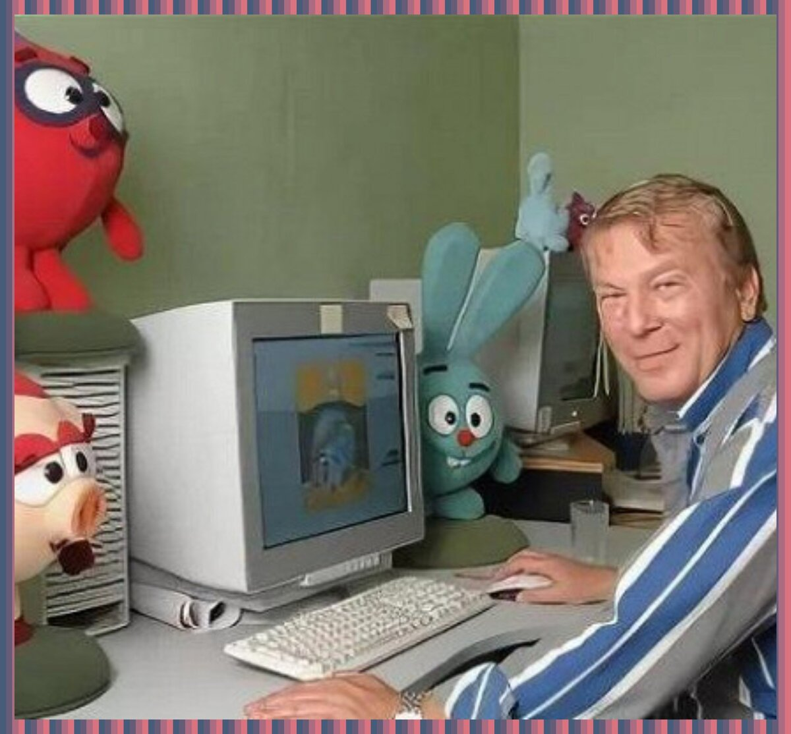
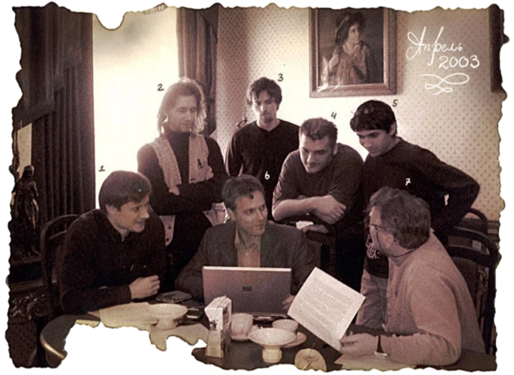
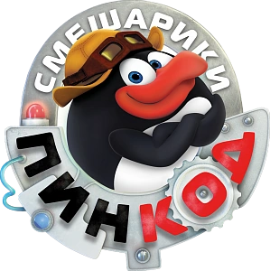
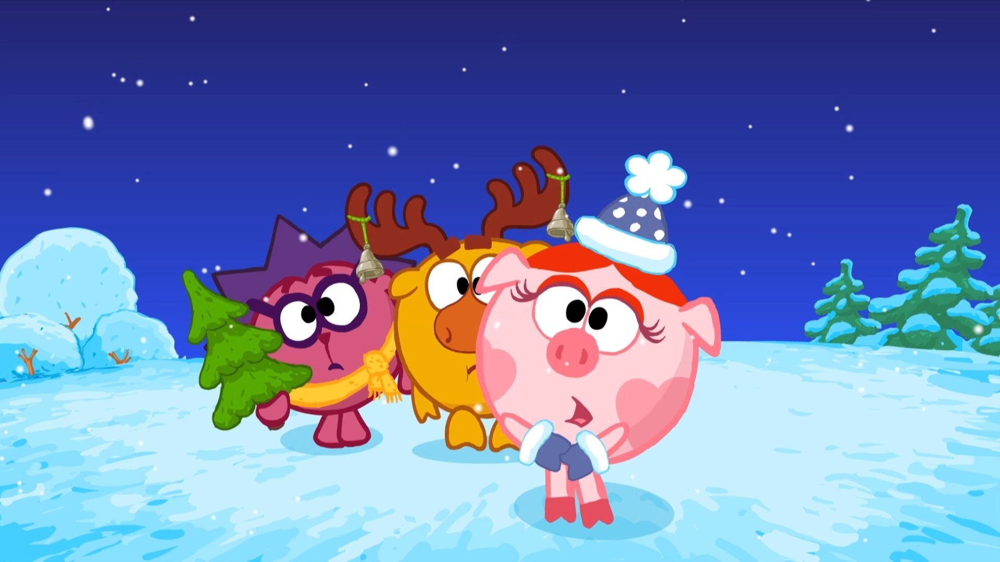
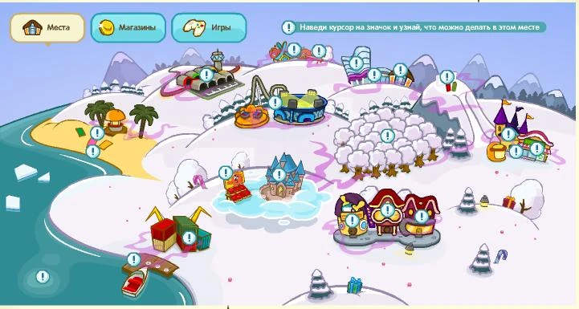

Смешарики

История создания и производствоИдеяВ 2001 году художник-постановщик Салават Шайхинуров, сотрудник фирмы Fun Game, занимающейся разработкой настольных игр, получил заказ на проработку концепции упаковки шоколадных конфет круглой формы — прообраза будущих персонажей. В 2002 году, проработав в общих чертах несколько персонажей, Шайхинуров совместно с дизайнером Ильёй Поповым, по совету Константина Бронзита, обратились к основателю анимационной студии «Пилот» Анатолию Прохорову. Около двух лет ушло на то, чтобы определиться с художественной идеологией проекта и стратегией его продвижения, характерами и дизайном персонажей. В 2003 году после доработки проект был принят к реализации, а в марте зарегистрировано ООО «Смешарики», учредителями которого стали Попов, Прохоров и Шайхинуров.  Создатели мультсериала1. Прохоров Анатолий Валентинович (17 июля 1948 — 30 августа 2020) 2. Попов Илья Александрович (род. 8 февраля 1978) 3. Чернов Денис Юрьевич (род. 10 июня 1970) 4. Яковенко Дмитрий Петрович (род. 16 мая 1981) 5. Лебедев Александр Владимирович (род. 29 мая 197) 6. Шайхинуров Салават Муллаханович (род 20 апреля 1970) 7. Алексей Сергеевич Минченок (род 4 ноября 1981)  Спин-оффыВ 2006 году стартовала серия спин-оффов «Азбука Смешариков», в которых герои сериала учат детей правилам безопасности дорожного движения, нормам морали, чтению и уважению к книгам, правам ребёнка, уходу за собственным здоровьем, навигации в интернете и финансовой и цифровой грамотности, защите лесов от пожаров и рассказывают о недвижимости, современных профессиях, культуре народов России. В 2012 году стартовал показ сериала «Смешарики. Пин-код» — научно-образовательного проекта, в рамках которого главные герои доступным языком рассказывали зрителям об устройстве мира, последних достижениях науки, законах физики и механики. В октябре того же года состоялась премьера сериала «Смешарики. Новые приключения» — прямого продолжения оригинального сериала, хронометраж эпизодов которого увеличился с шести минут до десяти. В 2015 году стартовал показ сериала «Малышарики» — сериала, рассказывающего о приключениях альтернативных версий младших смешариков. В 2017 году состоялся показ сериала «Смешарики. Спорт» — спин-оффа оригинального сериала, состоящего из шестиминутных сюжетов о различных видах спорта (борьбе, горных лыжах, баскетболе и др.). В 2018 году состоялась премьера «Наследников» — спин-оффа, в котором герои путешествуют по объектам всемирного наследия ЮНЕСКО в России на Шаролёте. В ноябре 2021 года на сервисе «КиноПоиск HD» состоялась премьера «Моднюши» — спецвыпуска, рассказывающего о приключениях альтернативной версии Нюши в европейском городе. В планах у создателей выпустить одноимённый спин-офф. В декабре 2022 года на сервисе «КиноПоиск HD» состоялась премьера «Синема» — спецвыпуска, рассказывающего о съёмках новогоднего кино  Показ за пределами РФПрава на распространение сериала на английском языке были приобретены у дистрибьютора Fun Game Media американской компанией 4Kids Entertainment, которая начала транслировать сериал в рамках детского блока. The CW4Kids на телеканале The CW с 13 сентября 2008 года под названием GoGoRiki. В мультфильме изменили имена персонажей и удалили эпизоды, которые были специфическими и понятными только для русской аудитории. Дублированная версия мультфильма включала 104 эпизода, 92 из них транслировали на канале CW4Kids. Мультсериал был также адаптирован для европейского показа бельгийской продюсерской компанией Studio 100 в 2009 году под новым названием BalloonToons. Название Kikoriki предложила выпускающая франшизу и осуществлявшая дубляж российская продюсерская компания «Рики-групп». Fun Game Media также выпустила версию на немецком языке, которая начала транслироваться на телеканале KiKA с 8 декабря 2008 года под названием Kikoriki[. В Китае сериал начал транслироваться с 7 марта 2011 года на детском канале Центрального телевидения Китая под названием «开心球» (кит. упр. 开心球, пиньинь kāi xín qiǔ, палл. Кайсиньцю, буквально: «Счастливые шарики»). На 2017 год аудитория сериала в Китае превышает российскую в 12 раз и составляет около 300 миллионов человек. С февраля 2017 года все права на распространение сериалов «Смешарики» и «Смешарики. Пин-код» за пределами СНГ, включая эпизоды на всех языках, кроме русского, принадлежат компании FUN Union. Мультсериал транслируется в 90 странах и переведён более чем на 60 языков.  ШарарамВ 2009 году на основе сериала были созданы многопользовательская компьютерная онлайн-игра «Шарарам». Это многопользовательская онлайн-игра, доступная по адресу www.smeshariki.ru или www.shararam.ru. Разработана ООО «Новые Медиа» при поддержке компании «Мегафон» в 2006—2008 годах. Открыта для только обладателей СмешКарты 28 декабря 2008 года, полностью открыта 15 января 2009. В игре необходимо создать своего личного персонажа, чтобы начать игру. Для того, чтобы получить в игре расширенные возможности, нужна «ШарарамКарта», которая покупается за настоящие деньги.  Введите данные и вы получите скидку на посещение выставки, посвященной Смешарикам |